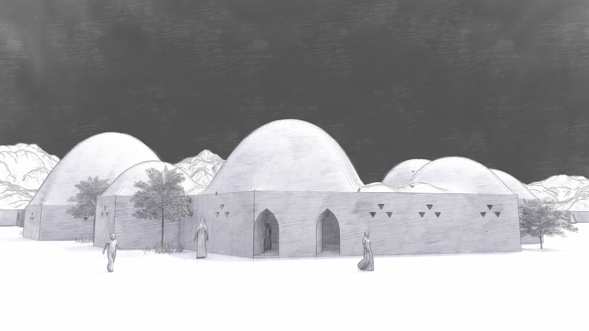
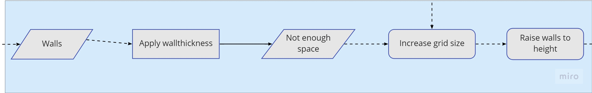
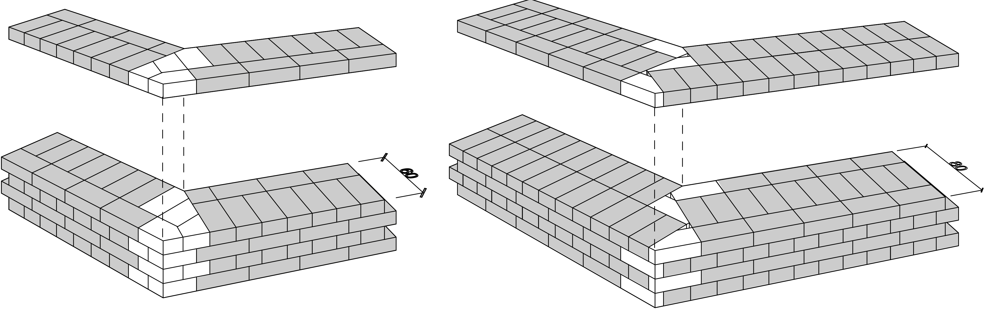
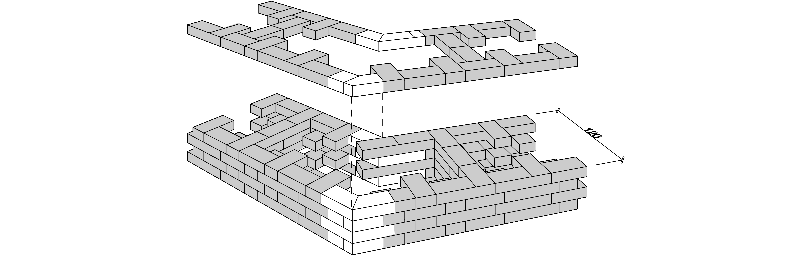
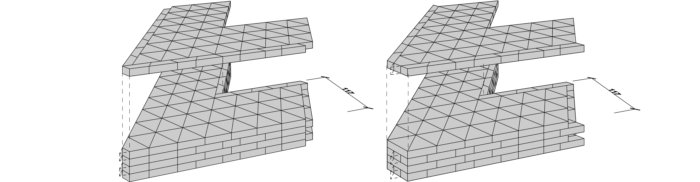

Walls:
How the 3D shape is generated into a buildable wall
Sometimes pictures are too small for their quality, feel free to open them in a new tab

Fig. 1: Impression of how the outside walls look like
This chapter will focus on how each wall is being built. First the focus is on how all the walls will look like. Then it will explain the bricklaying patterns and the process of building it.
Flowchart
In the 0_Introduction chapter the whole process of the design was shown. There were 5 groups that were dealt with individually. The walls are relatively simple. The process behind the walls is showed in this flowchart.

Fig. 2: Flowchart of the walls
Then for all the elements bricklaying needs to be developed, both in detail as in construction methods. The choice is made with several considerations. These are shown in the following flowchart.

Fig. 3: Bricklaying considerations
Develop the walls
From the 2_Forming chapter in Rule N11 the wall thickness and height is added. From the configuration hexagons work well with making quite easy builds. The main idea of the design is that the hexagons are extruded vertically and then domes are built on top of them. This is realisable as hexagons are easier with this than rectangles are. The walls are therefore in shape quite easy. There are four different kinds of domes, so there are also four types of wall-thicknesses. In the structural report the following diagram was shown:
Fig. 4: Diagram for wall thicknesses
In this picture it shows that there are 4 different kind of wall thicknesses, depending on the dome size. These thicknesses are 0.5m, 0,8m, 1.0m and 1.2m. The whole Hammam is made with these sizes, to make it a bit doable and understandable on how to do bricklaying in the project.

Fig. 5: The walls without extrusion
Bricklaying
The flowchart in Figure 3 shows the considerations between rectancular bricks and triangular bricks. The first input is the brick size.
Considering the optimal brick form and dimension it was decided to start with a rectangular brick of 40 x
20 x 10 cm since this brick proportion is beneficial to form steps and lies under the maximum weight limit
that a mason can handle.
The necessary wall thickness was based on the rule of thumb that an adobe wall of a dome should be
one sixth of the dome diameter. Since the domes were designed with 2.4, 4.8, 7.2 and 9.6m diameter,
the thicknesses was assumed to be at least 0.6, 0.8, 1.0 and 1.2m. The wall thickness of 0.4m was
omitted due to practical reasons, this thickness does not offer sufficient surface area to place vaults on
top.
Subsequently standard brick patterns as they have been used for centuries e.g. the half, cross and Flemish bond were tested for the number of necessary off-cuts. The design of the hammam is featured through hexagons so it was checked how the various wall thickness and bonds perform on the many sixty degree corners. As expected the result was that the rectangular brick bonds required a various number of off-cuts. However the number of off-cuts required was disappointing. In addition the same procedure was performed with rammed earth wall constructions but the result was again a high level off cuts. Even the application of tailor-made bricks was not satisfying. An even a higher number off-cuts was expected for the 120 degree corners for the archways.

Fig. 6: In white the off-cuts are shown, per layer this already results in 24 off-cut bricks

Fig. 7: In white the off-cuts are shown, per layer around 18 off-cut bricks
The more off-cut bricks, the worse as it has to be built easily for the people that build it.
Considering the triangular grid of the project the idea was obvious to run the same procedure with equivalent triangular bricks. When staggering the bricks above each other and rotating them alternately by 60 degrees a bond was achieved. By doing so the wall edges were graded. Here another trapezoidal brick had to be introduced so that smooth walls can be achieved. The triangular brick in combination with the small trapezoidal brick required no off-cuts to produce the 60 degree corners, independent from the wall thickness. For compatibility the triangular wall dimensions were modelled close to the rectangular brick, with side lines of 40cm and a height of 10cm. This resulted in the following bricklaying patterns:

Fig. 8: Using triangular bricks will result in having no cutt-off bricks
There is one following of this, that is the bricksize is following the triangular grid. As the grid used, consists 0.4 meters, the height of the brick
is an irrational number, as it is the sqrt of 0.12. With the trapezoid in this, there will always be wall thicknesses with the sizes:
(n + 1/3) * sqrt(0,12), where n is the amount of bricks in the width. But this is not a problem, as the new thicknesses are actually quite useful.
It will result in thicknesses of (rounded) 0.5m , 0.8m and 1,2meters. For the smallest walls it is not a problem if they are scaled down to 0.5 meters thickness
and for the 1meter wall something else will need to be thought of. This is done by using infill, a bit like the roman style.
Fig. 9: Also fill-in can be used
The result for the 120 degree corners of the archways were equally positive. It was advised to dull the sharp corners to reduce injuries and prevent the edge to break off. The triangular brick bond allows to dull the edge easily with only every second brick to be slightly amended i.e. cutting off a small protruding edge.

Fig. 10: Corners
For the walls, the decision was made to stick with the triangular bricks, for quite obvious reasons. The only thing that could change this decision is if there are hard problems with doors. decision is if there are hard problems with doors.